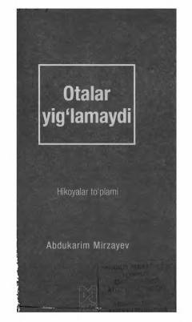

OYHayotiy saboqlar, rizq va sabr haqidagi ta'sirli hikoyalar to'plami.
Ushbu kitob taniqli jurnalist va ijodkor Abdukarim Mirzayevning hayotiy hikoyalari hamda rizq, sabr, iymon kabi muhim mavzulardagi ma'ruzalarini jamlagan to'plamdir. Asar insonni hayot tashvishlarida xotirjamlikka, Allohga tavakkul qilishga va ma'naviy yuksalishga chorlaydi.